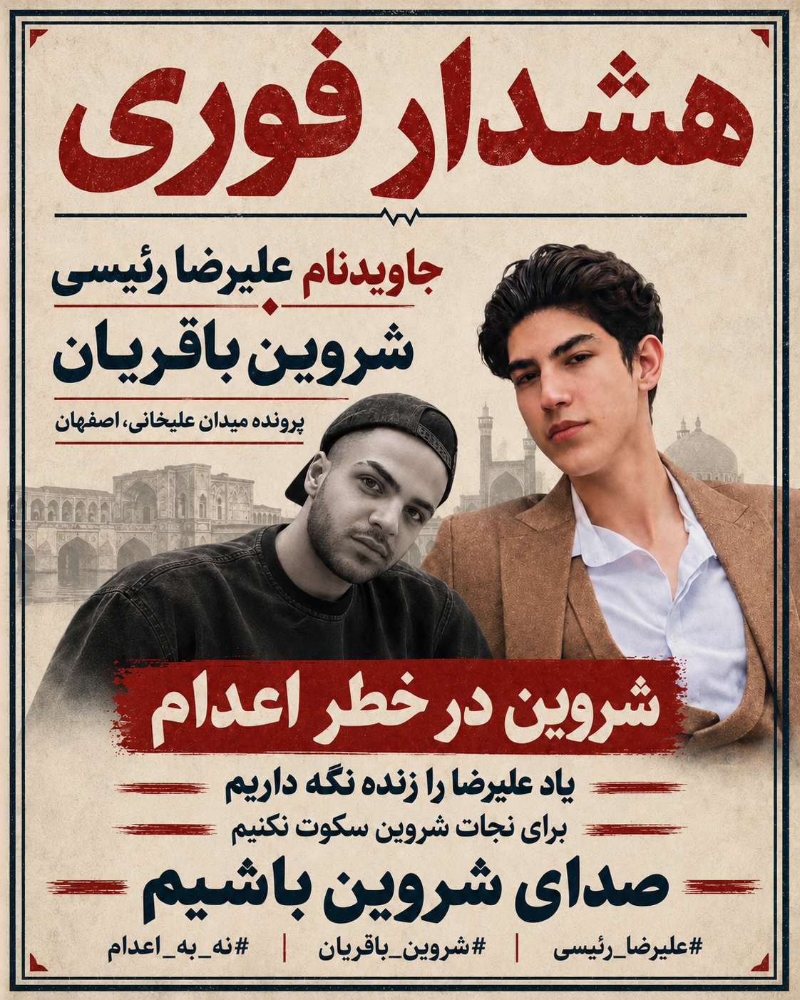

🕯️ آرشیو تاریخی: این متنها پیش از اعدام علیرضا رئیسی نوشته شدهاند و اکنون ممکن است اطلاعات نادرست داشته باشند. صرفاً برای ثبت سابقه نگهداری شدهاند؛ امکان کپی یا انتشار مستقیم عمداً غیرفعال است.
0 نتیجهاستفادهشده: 0 از 1000

شروین باقریان، جوانی از اصفهان که هنگام بازداشت در دیماه ۱۴۰۴ حدود ۱۸ سال داشت، در پرونده موسوم به میدان علیخانی با خطر اجرای حکم اعدام مواجه است. گزارشهای حقوق بشری از پخش بازجویی تلویزیونی پیش از محاکمه، ضربوشتم، محرومیت از وکیل و نقض حق دفاع سخن گفتهاند. آخرین محل نگهداری شناختهشده او زندان دستگرد اصفهان است؛ تا ۳ آبان ۱۴۰۵ (۲۵ اکتبر ۲۰۲۶) اجرای حکم یا تعیین زمان اجرای آن درباره شروین بهصورت معتبر تأیید نشده است.
گزارش اکتبر ۲۰۲۶: حکم اعدام تأییدشده؛ محل شناختهشده زندان دستگرد؛ جزئیات فعلی تماس، انفرادی و زمان اجرا تأیید نشدهاند.
خواسته روشن: نجات جان شروین، توقف اجرای حکم و آزادی او؛ از راه توجه جهانی، گزارشگری، پیگیری حقوق بشری و فشار دیپلماتیک.
علیرضا رئیسی، همپرونده شروین، بامداد ۱۳ مهر ۱۴۰۵ (۵ اکتبر ۲۰۲۶) در زندان دستگرد اصفهان اعدام شد.
نام و یاد او حفظ میشود. متنهای تازه، برای او درخواست جلوگیری از اعدام یا آزادی از زندان نمیکنند.